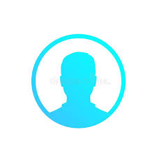

<router-outlet></router-outlet>
<mat-toolbar color="primary" class="fixed-header">
    
    <button mat-button routerLink="/">Home</button>
    <button mat-button routerLink="/about">About</button>
    <button mat-button routerLink="/skills">skills</button>
    <button mat-button routerLink="/works">Works</button>
    <button mat-button routerLink="/blog">Blog</button>
</mat-toolbar>
